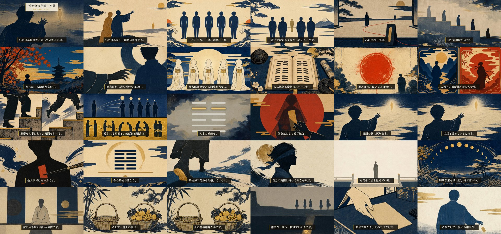

第41話 通し視聴ゲート ・ content/061 ・ 完成MP4 518s(約8分38秒)
第41話「五等分の花嫁 × 帰妹」完成・通し視聴
【冒頭フック 作り直し版】ご指摘を受け、冒頭を「連絡先を並べ替える」から「いちばん好きだった人とはうまくいかず、意識してなかった人と長く続く」という誰もが持つ記憶へ差し替えました（絵も遠ざかる光の人影へ手を伸ばす後ろ姿へ）。全工程完了。MacのQuickTimeで再生を開始しています。通しで観て、公開してよいかご判断ください（品質ゲート4/5で合格）。動画本体はローカル：releases/061/essay-061.mp4

全編を30フレームで俯瞰（実レンダから抽出）
機械ゲート（全PASS）
mix：尺523.6s・ピーク-4.1dB(クリップなし)・幕間BGM-34.9dB・シーン境界の黒落ちゼロ(28境界)
約束の確認：冒頭0-8s「五等分の花嫁 四葉／易経・帰妹（きまい）」オーバーレイ
字幕：明朝60px・金の左罫・全カット音声同期
識別監査：ブラインドPASS（作品もキャラも同定不可・固有意匠なし）
品質ゲート5項目（通しで確認してください）
- ① 冒頭30秒で緊張が立つ（連絡先を心の中で並べ替える＝順位づけの身に覚え）
- ② 「へえ」が3つ（序卦 漸→帰妹の吉凶反転／同じ嫁ぐでも作法で逆／永終＝終わりで結べ）
- ③ ビジュアルがチャッチーでない（木版浮世絵・顔なし・六爻図決定論）
- ④ 一般人が違和感ない日本語（です/ます・言い淀み1箇所・定型CTAなし）
- ⑤ 終わりが余韻・断言で立つ（「順位を手放した人にだけ、順位の外の本命が見える」）
🚦 ご判断
承認 → タイトル3案（arm=hole/kw）→ Tier Aサムネ → ショート（隣の卦型）→ 公開キット を作り、2026-07-20 04:00 JST 予約まで進めます（公開ボタンは本人）。
修正指示 → 直したいシーン・字幕・BGM・尺をお知らせください。
中心命題：順位で選ぶ結びは凶（帰妹の征凶）／永終＝終わりまで、で結べば吉。惹かれた順位は、添う相手を決める資格を持たない。